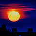
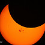

The earliest stars probably formed only a few hundred thousand years after the Big Bang that started the universe - maybe about 13.5 billion years ago. Stars are the oldest big objects in the Universe. Stars formed big clumps of hydrogen and a few helium atoms, the simplest kinds of atoms, and pretty much the only kinds that existed before there were stars. Once enough hydrogen and helium atoms clumped together, though, they began to have tremendous gravity.
This gravity pulled the hydrogen atoms closer and closer together in the middle of the star. All those electrons in one place made the star hotter and hotter - about 100 million degrees celsius. As the atoms got closer together, they bumped into each other more often. When this happened, sometimes the two atoms would join together into one atom, and two hydrogen atoms would turn into one helium atom. We call this process "nuclear fusion". Nuclear fusion releases a lot of extra electrons, and these electrons go shooting off into space in all directions. It's those zillions of electrons that you see, that make the stars shine - and that's what makes our Sun shine, too. The electrons give off all wavelengths of energy, so they give off not only light, but also heat....

The Sun is a star, just like billions of other stars in the universe. Our Sun probably formed a little more than four and a half billion years ago, just a little bit before the planets formed around it. It's not one of the older stars in the Universe. Probably some of the earliest stars went supernova, and then new stars formed out of those nebulae, and then the new stars went supernova, and the Sun formed out of one of these new nebulae. So you could say that the Sun is like the grandchild of the first stars.
Like other stars, the Sun is mostly made of hydrogen atoms. All stars start out making energy by changing hydrogen atoms into helium atoms. At the surface, the Sun is almost 10,000 degrees Fahrenheit (more than 5000 degrees Celsius), but it is much hotter in the middle of the Sun, about 25 million degrees Fahrenheit (14 million degrees Celsius). The Sun is one of the brighter stars in the Universe, because many other stars are older and have already turned into red dwarfs....

An eclipse of the sun happens whenever the moon gets between the Earth and the sun, so that the moon blocks your view of the sun. Depending on where you are standing on the Earth, you might see the sun completely blocked (as in these pictures) or only partly blocked, or you might not see it at all.
The moon passes between the Earth and the sun once every month, at the new moon, but most of the time the moon is either too high up or too low to block our view of the sun. About twice a year, the moon does get in the way of the sun, causing an eclipse. But even then, you can only see the eclipse from some places on Earth; the area where you can see a total eclipse is about 100 miles wide. Eclipses move around the earth, so every year people in different places see them....